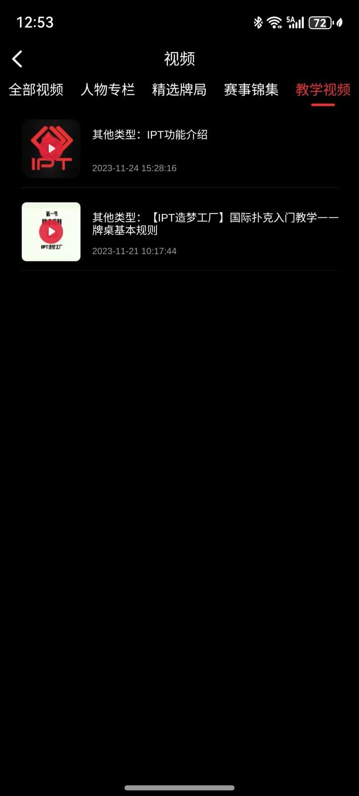

Texas Hold'em Tournament Source Code
德州锦标赛源码
SNG/MTT 赛事界面、C++ 游戏入口、Tars 通信协议、玩法时序图、产品截图与发布脚本。选择语言查看完整的功能、玩法、技术组成及公开源码入口。
简体中文产品功能、赛事玩法、技术组成、源码入口与截图
繁體中文產品功能、賽事玩法、技術組成、原始碼入口與截圖
EnglishFeatures, tournament flow, architecture, source entry points and screenshots
